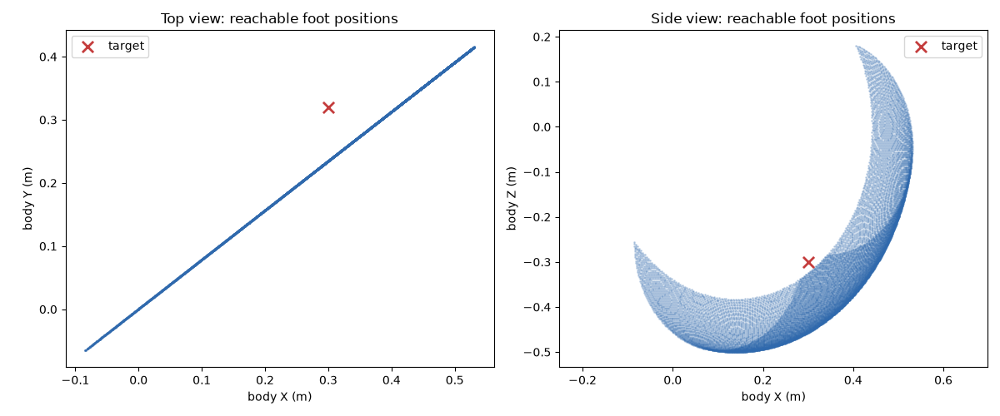

01 · Question
Can one current leg realize the support point?
The target was [+0.30, +0.32, −0.30] m in the torso frame. The torso stayed fixed, gravity was disabled, and no contact, torque, or controller was involved.
02 · Prediction
Leg length looked sufficient; joint-axis orientation was uncertain.
The initial prediction was that the target was reachable. The test sampled only the declared front-left hip and knee limits before introducing any new morphology.
03 · Observation
The two-joint workspace missed outward.
The nearest sampled two-joint position was [+0.341, +0.267, −0.301] m: 0.0670 m from the target, chiefly 0.053 m short in the outward body-Y direction. Holding those angles fixed, a positive 5° experimental proximal-axis probe displaced the foot by [−0.0217, +0.0264, +0.0012] m and reduced the distance to 0.0328 m.
● target support point · blue ● nearest two-joint sample · green ● and arrow positive 5° proximal-axis probe

Narrow deterministic rerender of the pinned notebook plot cell ↗, using the pre-morphology C-1N model revision ↗.
04 · Model update
Reachability comes before gravity compensation.
Leg length alone did not determine the support geometry. The current axes could not place the foot at this target within the sampled tolerance; the added orthogonal axis changed the reachable direction as predicted. That is a morphology result, not a standing, torque, or gait result.
05 · Continuation boundary
The next useful step was C-1N v0.2 STAND.
This bench comparison stopped once it supplied the morphology evidence needed for the standing integration. The next work combined that placement question with Issue #24’s support measurements in C-1N v0.2 STAND ↗. That integration is separate evidence; this short page does not credit the workspace probe alone with stable standing.
follow-up experiment · constrained solve
the added axis reaches this target.
the retained solve reports a residual norm of 0.066976422 m for the two-joint leg. the experimental three-joint leg reaches the target to the printed precision. i recorded the interpretation in the notebook: the added degree of freedom supplies the missing direction. this is a kinematic result for one leg; force transmission and slip still need their own test.
retained output, cell 21; human interpretation, cell 24 · pinned notebook ↗
Evidence & provenance